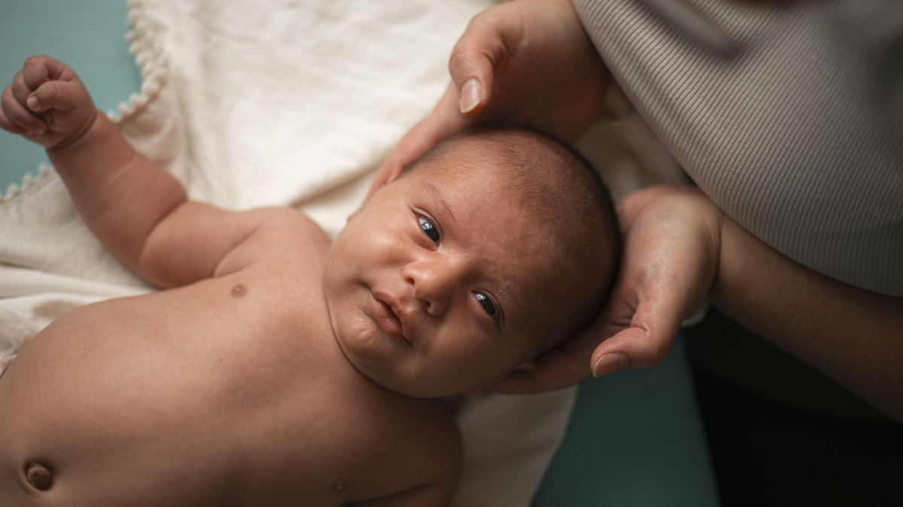
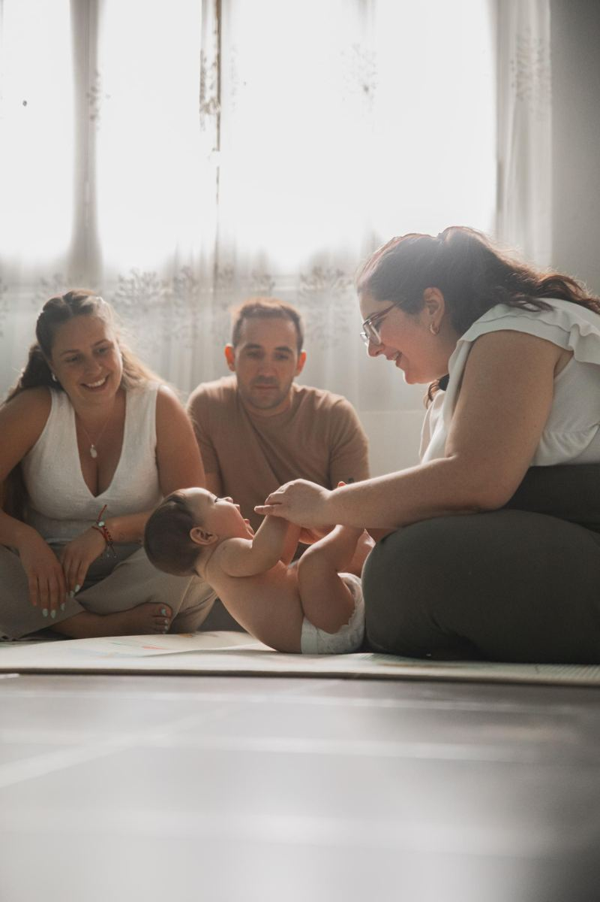
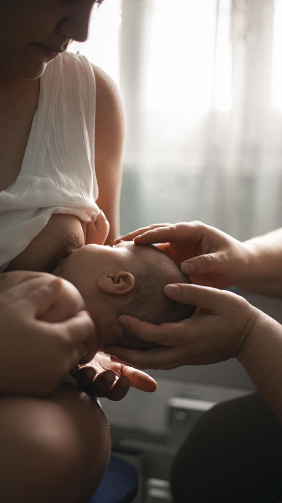
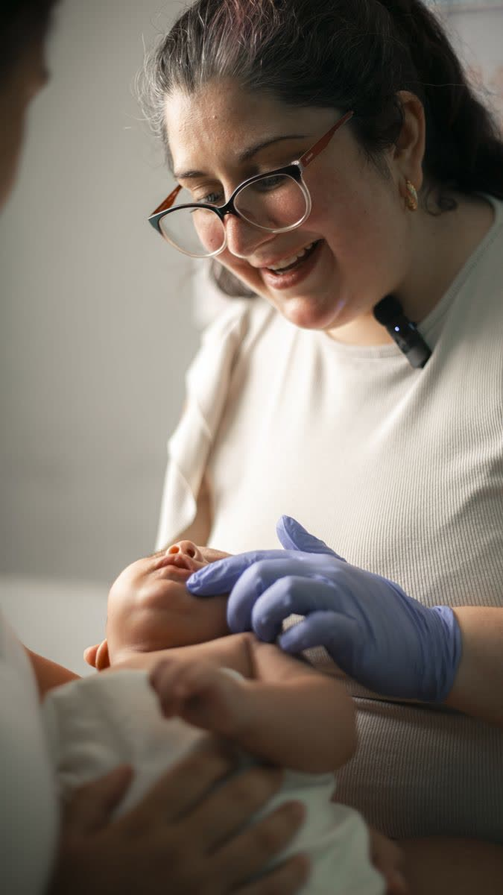
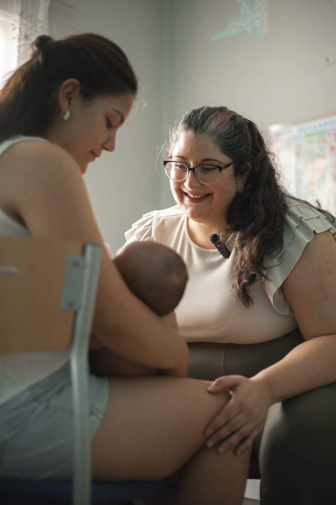
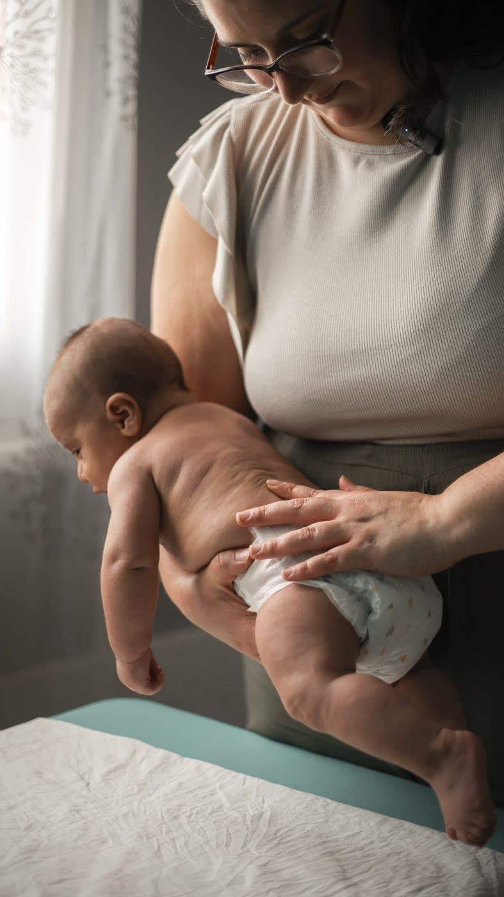
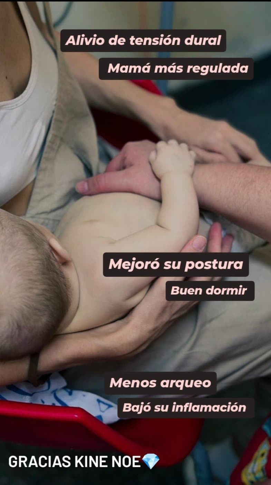

¿Esta consulta es para ustedes?
Si sienten que algo no está del todo bien. Aunque les hayan dicho que "es normal". Aunque ya hayan consultado. Aunque todavía no exista un diagnóstico.
O simplemente quieren acompañar su desarrollo de la mejor manera posible.

¿Qué hace diferente este abordaje?
No realizo únicamente terapia manual. Trabajo integrando tres pilares: el cuerpo, el sistema nervioso y el neurodesarrollo.
Ustedes también forman parte del tratamiento
Les enseño cómo continuar el proceso en casa, porque una sesión semanal no cambia un bebé. Lo que transforma realmente el proceso es lo que sucede entre una sesión y otra.
No vienen solo a recibir una terapia
Aprenden a comprender a su bebé — a leer sus señales, entender qué lo regula y qué lo desregula, y sostener eso en el día a día.

¿Qué evaluamos?
Antes de la primera sesión realizo un análisis clínico completo, que incluye:


También solicito videos específicos para observar aspectos que muchas veces no pueden verse durante una consulta presencial. En la sesión realizamos pruebas específicas para comprender qué está limitando el bienestar del bebé y cuál es el mejor camino terapéutico.
¿Cómo trabajamos?
- Evaluación integral
- Primer tratamiento manual
- Explicación completa de lo que está ocurriendo
- Primeras herramientas para comenzar en casa
- Regulación del sistema nervioso del bebé
- Regulación para mamá y papá mediante respiración y conciencia corporal
Continuamos trabajando sobre liberación de tensiones, organización corporal, sistema nervioso, neurodesarrollo, hábitos, movimiento y acompañamiento familiar. Cada sesión se adapta a la evolución de ese bebé.



¿Qué bebés acompaño?
¿Qué cambia después del proceso?
Van a comprender realmente qué necesita su bebé, van a aprender a leer sus señales antes de que llegue al llanto intenso, y van a tener herramientas concretas para acompañarlo en casa.
- Disminuye la irritabilidad
- El descanso empieza a organizarse mejor
- La alimentación se vuelve más tranquila
- El movimiento se vuelve más armónico
- El bebé encuentra mayor comodidad en su cuerpo
- La familia recupera confianza y disfruta mucho más esta etapa
Mi objetivo no es que dependan de mí. Mi objetivo es que comprendan a su bebé. Esto no es una sesión, es un proceso — los cambios profundos necesitan tiempo. Por eso trabajo mediante procesos terapéuticos y no solamente con sesiones aisladas.
Lo que cuentan las familias
"Mi bebé estaba muy irritable, no lo podía dejar dos minutos lejos de mí. Probamos de todo antes. Con Noelia fue distinto desde el primer momento: nos hizo muchas preguntas para comprender qué sucedía. Su forma de hablar, de explicar, de tocar, de mirar, de estar, lo calmó en un ratito, y a nosotros también. Nuestro bebé duerme mejor, llora mucho menos, no se irrita tanto. Todos dormimos."
"Llegamos con nuestra bebé completamente desregulada: lloraba día y noche y ya no sabíamos qué más hacer. Noelia no solo trabajó con ella, también nos enseñó a entenderla. En una sola sesión ya vimos cambios enormes: se durmió en la consulta y se despertó recién a las 3 horas. Ahora sabemos cómo acompañarla. Se nota que no hace algo mecánico, está ahí de verdad."
"Mi bebé tenía muchos cólicos, no dormía, no se alimentaba bien y estábamos en total desesperación. Después del tratamiento llegó mucha paz: empezó a aumentar de peso, dormía y estaba mucho más activo en la vigilia, no hubo más cólicos y tomaba bien la teta. Me sentí muy tranquilo, con mucha paz y confort."

Cómo comenzamos
Reservás tu lugar
Realizás la transferencia
Enviás el comprobante
Recibís la historia clínica
Enviás los videos solicitados
Analizo todo previamente
Nos encontramos en la consulta presencial
¿Vienen de otra ciudad?
Si viajan para que vea a su bebé, o si querés que yo vaya a tu ciudad, armé dos planes de días seguidos:
Inversión
Consulta inicial
Sesión individual
Packs de tratamiento
Los cambios profundos necesitan un proceso. Elegí el acompañamiento que necesita tu bebé:
Pack Bebé x 3
- 3 sesiones de TMPI
- Abordaje del sistema nervioso
- Herramientas para casa
Pack Bebé x 6
- 6 sesiones de TMPI
- Abordaje del sistema nervioso
- Herramientas para casa
- Acompañamiento durante el proceso
Pack Bebé x 10
- 10 sesiones de TMPI
- Abordaje del sistema nervioso
- Seguimiento por WhatsApp
- Herramientas para casa
- Acompañamiento durante todo el proceso
La consulta inicial se realiza antes de comenzar cualquier pack y no está incluida.